Vignette
Vignette.Rmd
library(stxplore)
library(dplyr)
#>
#> Attaching package: 'dplyr'
#> The following objects are masked from 'package:stats':
#>
#> filter, lag
#> The following objects are masked from 'package:base':
#>
#> intersect, setdiff, setequal, unionThe dataset
We are using the NOAA dataset used in the book Spatio-Temporal Statistics with R by Christopher K. Wikle, Andrew Zammit-Mangion and Noel Cressie. The dataset we’re using contains precipitation, maximum and minimum temperatures for the years 1990 to 1993 for some regions in the United States. Let’s have a look at the dataset.
data("NOAA_df_1990")
head(NOAA_df_1990)
#> julian year month day id z proc lat lon date
#> 1 726834 1990 1 1 3804 35 Tmax 39.35 -81.43333 1990-01-01
#> 2 726835 1990 1 2 3804 42 Tmax 39.35 -81.43333 1990-01-02
#> 3 726836 1990 1 3 3804 49 Tmax 39.35 -81.43333 1990-01-03
#> 4 726837 1990 1 4 3804 59 Tmax 39.35 -81.43333 1990-01-04
#> 5 726838 1990 1 5 3804 41 Tmax 39.35 -81.43333 1990-01-05
#> 6 726839 1990 1 6 3804 45 Tmax 39.35 -81.43333 1990-01-06Initial explorations
First we’re going to explore this dataset using simple methods.
Spatial snapshots through time
We will focus on the maximum temperature and see how it changes over time in 1993. First we will filter the data for Tmax for year 1993 and months 5 to 9. The the field julian has a unique number for each day. We will make a new column to represent the days starting from 1 and select certain days.
Tmax <- filter(NOAA_df_1990,
proc == "Tmax" &
month %in% 5:9 &
year == 1993)
Tmax$t <- Tmax$julian - min(Tmax$julian) + 1
Tmax_days <- subset(Tmax, t %in% c(1, 15, 30))Now we can use the spatial_snapshots function. For this function we need to give the data frame and the columns which are used for latitude, longitude, time and the column which has the quantity we want to plot. You can also give the main and legend title for the plot.
spatial_snapshots(Tmax_days,
lat_col = 'lat',
lon_col = 'lon',
t_col = 't',
z_col = 'z',
title = "Maximum Temperature for 3 days",
legend_title = 'Temp')
Suppose we want to plot the maximum temperature for days 1 to 12.
Tmax_days <- subset(Tmax, t %in% c(1:12))
spatial_snapshots(Tmax_days,
lat_col = 'lat',
lon_col = 'lon',
t_col = 't',
z_col = 'z',
title = "Maximum Temperature for 12 days",
legend_title = 'Temp')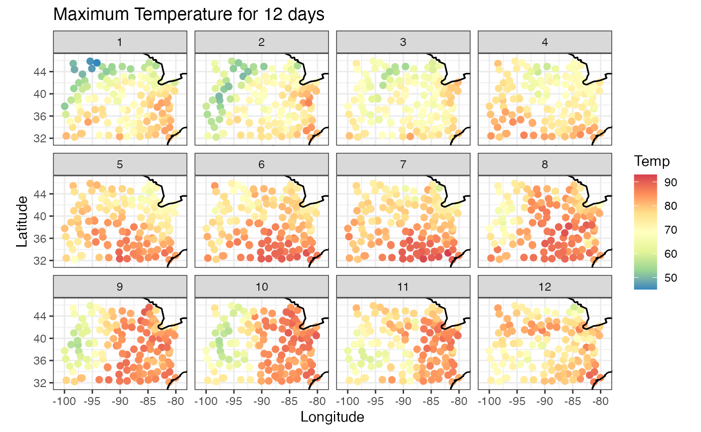
Time series snapshots for different locations
We have looked at spatial snapshots over time. Now let’s look at temporal snapshots for given spatial locations. First let’s look at the location ids and sample 12 of them.
set.seed(148)
Tmax_ID <- unique(Tmax$id)
ids <- sample(Tmax_ID, 12)
ids
#> [1] 14926 93842 14848 93820 3919 94918 13871 94823 13988 3952 13971 3841Then we use the temporal_snapshot function to plot the temporal snapshots at those locations. Similar to the previous function, we need to specify the dataframe, time column, value column, the id column and the id samples. You can specify the x and y labels and the title.
temporal_snapshot(Tmax,
t_col = 't',
z_col = 'z',
id_col = 'id',
id_sample = ids,
xlab = "Days",
ylab="Temperature",
title = "Temperature Selected Days")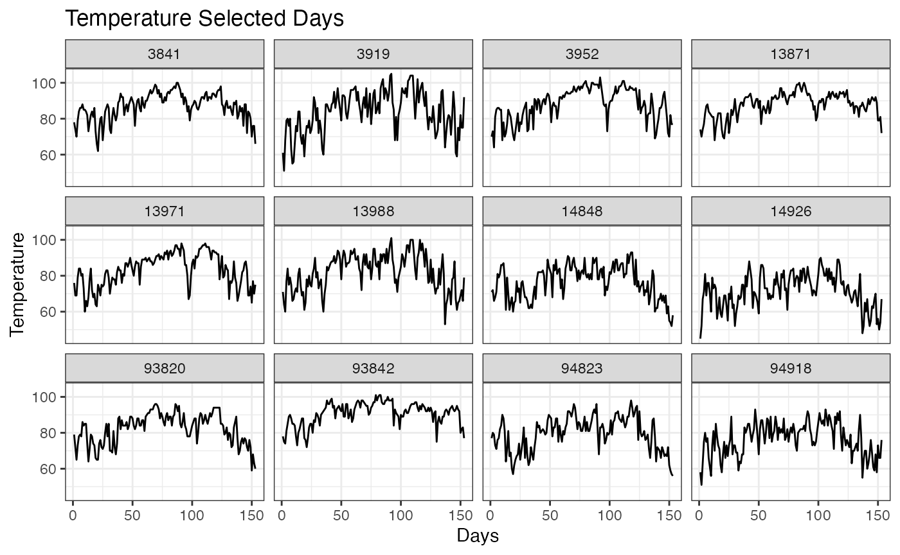
Spatial empirical means (averaged over time)
Suppose we want to explore the average value for the time period. That is, for every location we average the values over time. We can see how the average value changes for different latitude and longitude values. As our quantity of interest is Maximum Temperature, we get the Mean Maximum Temperature in these plots. We can also see that there is a relationship between Mean Maximum Temperature and the Latitude, but not the Longitude, which is expected.
sem <- spatial_means(Tmax,
lat_col = "lat",
lon_col = "lon",
t_col = "t",
z_col = "z"
)
autoplot(sem, ylab="Mean Max Temp")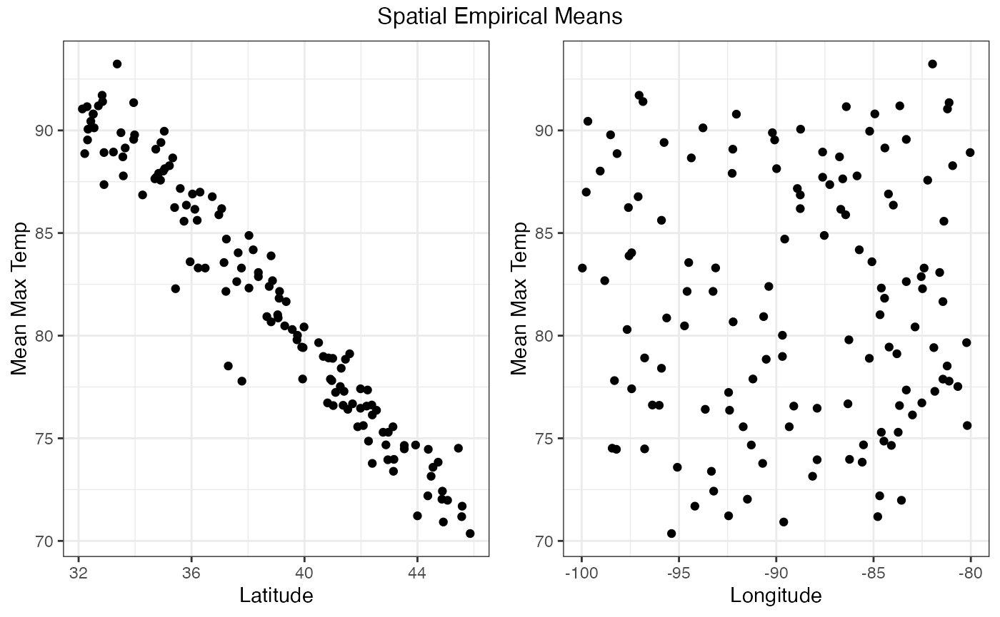
#> TableGrob (2 x 2) "arrange": 3 grobs
#> z cells name grob
#> 1 1 (2-2,1-1) arrange gtable[layout]
#> 2 2 (2-2,2-2) arrange gtable[layout]
#> 3 3 (1-1,1-2) arrange text[GRID.text.1423]Temporal empirical means (averaged over space)
Similarly, we can plot the averages over space and see their fluctuations over time. In this case, we’re computing the average for each date over all the latitude and longitude values. We see a graph with the observed and the average values for each date.
tem <- temporal_means(Tmax,
t_col = 'date',
z_col = 'z',
id_col = 'id')
autoplot(tem,
ylab = "Mean Maximum Temperature")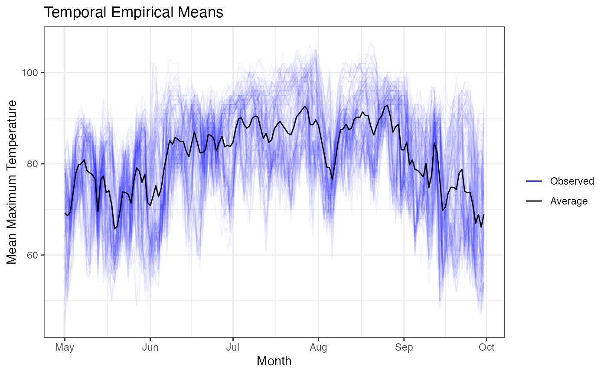
We finish the initial explorations with the Hovmoller plots.
Hovmoller plots
Hovmollet plots are generally used to reduce spatial dimensions. It is sometimes called a cross between a map and a graph. It is commmonly used to collapse one of the spatial dimensions. In our example we have the maximum temperature for different latitude, longitude and time values. We can average by latitude and see how the maximum temperature changes with time and longitude. Or we can average by longitude and explore the changes in maximum temperature with respect to latitude and time.
The function hovmoller takes similar arguments to the other functions with the exception of lat_or_lon and lat_or_lon_col arguments. The argument lat_or_lon specifies, which spatial component we will see in the plot. If we specify lat, then we will see a plot of the quantity of interest (Max Temp in our case) with latitude and time as the two axes. If we specify lon, then we will see longitude on the x-axis. The argument lat_or_lon_col is used to specify the column corresponding to the spatial variable.
To average by longitude, we need to specify lat_or_lon = ‘lat’. That is, if you want to see latitude on the x-axis, then specify lat.
hov <- hovmoller(lat_or_lon = "lat",
df = Tmax,
lat_or_lon_col = 'lat',
t_col = 't',
z_col = 'z')
autoplot(hov, legend_title = "Temperature")
The above graph gives valuable information. We see that at higher latitudes the maximum temperature is low compared to lower latitudes. There is another interesting bit of information. The dataset Tmax spans 150 days from May to September. This is from Spring to Autumn in the Northern Hemisphere. Generally, the maximum daily temperature would go up from May to July/August and then it would go down. This is confirmed by the parabolic pattern of dark red/orange squares we see over time.
If we want to see longitude on the x-axis (average by latitude), then we need to specify lat_or_lon = ‘lon’. but this plot is not so interesting.
hov <- hovmoller (lat_or_lon = "lon",
df = Tmax,
lat_or_lon_col = 'lon',
t_col = 't',
z_col = 'z')
autoplot(hov, legend_title = "Temperature")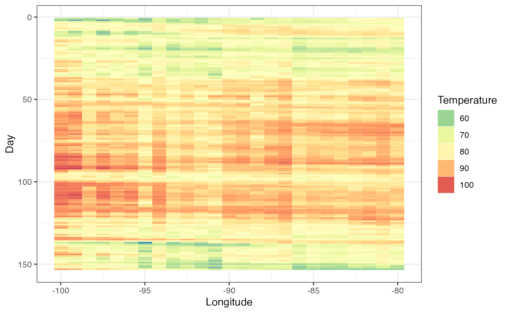
Empirical covarainces, semivariograms and orthogonal functions
Empirical covariances, spatio-temporal covariograms and semivariograms are popular tools in spatio-temporal exploration. In this section, we will look at plotting some of these objects. For more details on covariances, semivariograms and orthogonal functions please refer Chapter 2.4.2 in Spatio-Temporal Statistics with R by Christopher K. Wikle, Andrew Zammit-Mangion and Noel Cressie.
Empirical covariances
To explore the empirical covariances, we first remove the trends and examine the residuals. The emp_spatial_cov function can remove either linear or quadratic trends in space and time. If you set quadratic_time = TRUE a quadratic trend is removed in time. Similarly if you set quadratic_space = TRUE, a quadratic component in space is removed. If these arguments are set to FALSE only a linear trend is removed.
The emp_spatial_cov function can plot latitude or longitude strips of empirical covariance. That is, you can divide the spatial domain into strips corresponding to either latitude or longitude and plot the associated covariance matrices for those strips.
Let’s see some longitudinal strips for this dataset after removing a quadratic time and a linear space trend. We will see how they change with latitude values.
esv <- emp_spatial_cov(Tmax,
lat_col = "lat",
lon_col = "lon",
t_col ="t",
z_col = "z",
num_strips = 4,
quadratic_space = FALSE,
quadratic_time = TRUE,
lat_or_lon_strips = "lon"
)
autoplot(esv)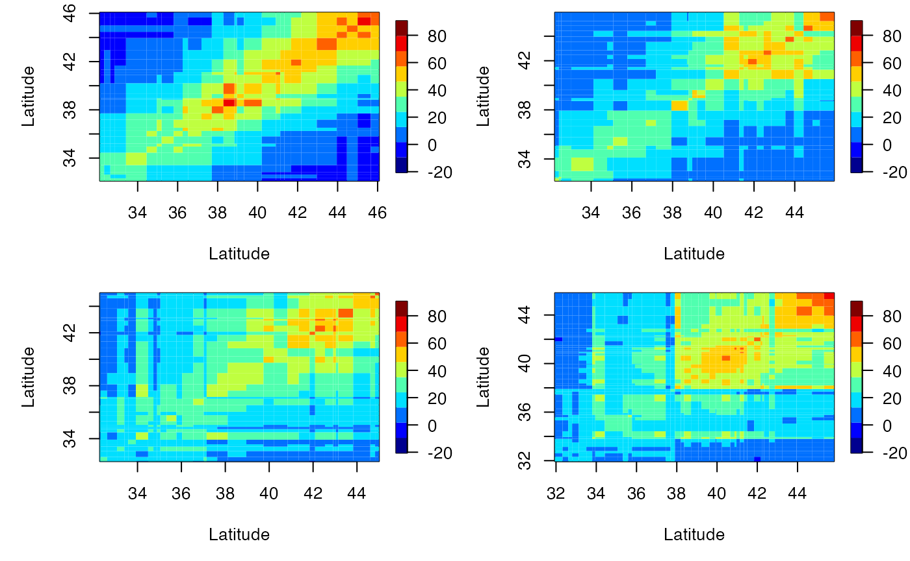
Similarly, we can also plot latitude strips; the x axis will be longitude then.
esv <- emp_spatial_cov(Tmax,
lat_col = "lat",
lon_col = "lon",
t_col ="t",
z_col = "z",
num_strips = 4,
quadratic_space = FALSE,
quadratic_time = TRUE,
lat_or_lon_strips = "lat"
)
autoplot(esv)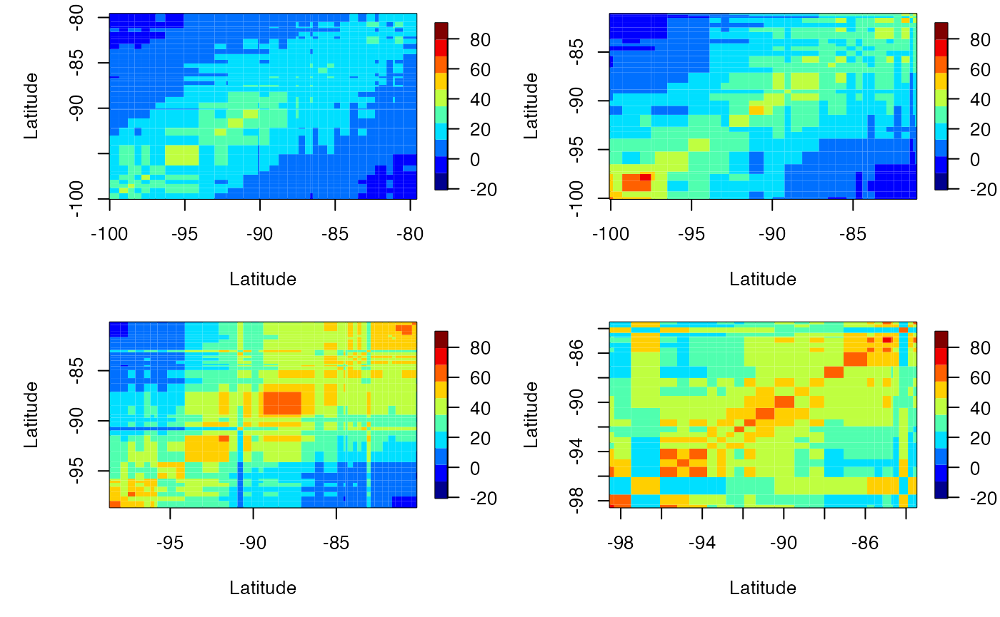
We can also compute the lagged covariance. We do this by setting the lag parameter. Let’s see the lagged-1 empirical covariance for this data after removing a quadratic trend in time.
# longitudinal strips
esv1 <- emp_spatial_cov(Tmax,
lat_col = "lat",
lon_col = "lon",
t_col ="t",
z_col = "z",
num_strips = 4,
quadratic_space = FALSE,
quadratic_time = TRUE,
lat_or_lon_strips = "lon",
lag = 1
)
autoplot(esv1)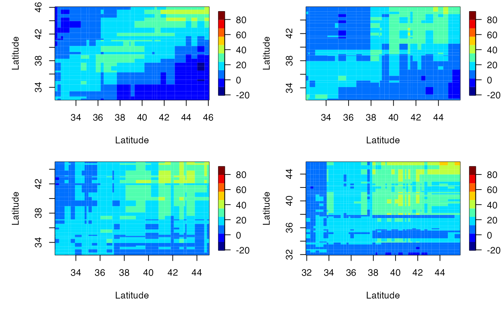
# latitude strips
esv2 <- emp_spatial_cov(Tmax,
lat_col = "lat",
lon_col = "lon",
t_col ="t",
z_col = "z",
num_strips = 4,
quadratic_space = FALSE,
quadratic_time = TRUE,
lat_or_lon_strips = "lat",
lag = 1
)
autoplot(esv2)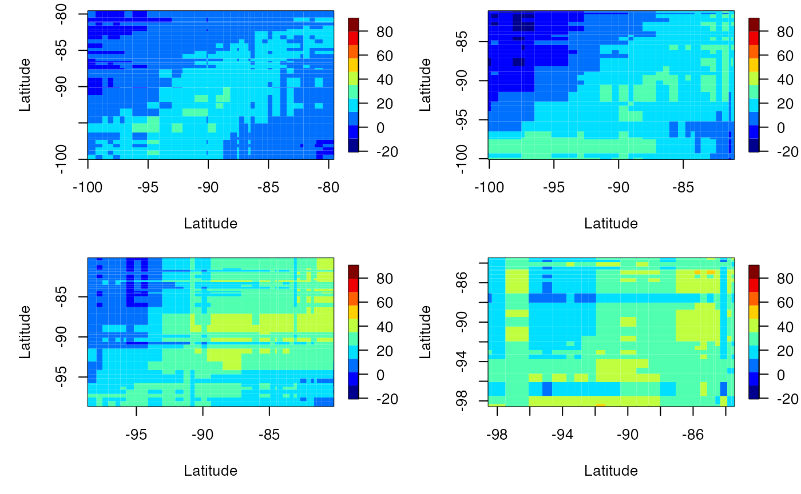
Space-time semi-variograms
To plot space-time semi-variograms we need to construct an object of STDF Class. We do this inside the function semivariogram. To create an STDF object, we need spatio-temporal data with a full spate-time grid. That is, we need a matrix of M x N size, where N is the number of spatial locations and M is the number of timestamps. Let’s have a look at these files.
# Location data
data(locs)
head(locs)
#> id lat lon
#> 1 3804 39.35000 -81.43333
#> 2 3809 36.01667 -89.40000
#> 3 3810 35.73333 -81.38333
#> 4 3811 35.60000 -88.91666
#> 5 3812 35.43333 -82.48333
#> 6 3813 32.70000 -83.65000
dim(locs)
#> [1] 328 3
# Timestamp data
data(Times)
head(Times)
#> julian year month day
#> 1 726834 1990 1 1
#> 2 726835 1990 1 2
#> 3 726836 1990 1 3
#> 4 726837 1990 1 4
#> 5 726838 1990 1 5
#> 6 726839 1990 1 6
dim(Times)
#> [1] 1461 4
# Spatio-temporal data
data(Tmax)
dim(Tmax)
#> [1] 1461 328For this dataset, NA values are stored as -9999. First we select part of the dataset by subsetting the time component. We select the appropriate rows in both Times and Tmax.
temp_part <- with(Times, paste(year, month, day, sep = "-"))
# Selecting the dates from 0992-07-01 to 1992-07-31
temp_part <- data.frame(date = as.Date(temp_part)[913:943])
Tmax2 <- Tmax[913:943, ]Now we can plot the semi-variogram. Under the hood we use the function variogram in the package gstate to produce the semi-variogram. We include a bin size of 50km and up to 7 timelags. We can specify if we need to remove the linear trend of the latitude or longitude. First, let’s see what happens without removing the linear trend.
semiv <- semivariogram(locs,
temp_part,
Tmax2,
latitude_linear = FALSE,
longitude_linear = FALSE,
missing_value = -9999,
width = 50,
cutoff = 1000,
tlagmax = 7
)
autoplot(semiv)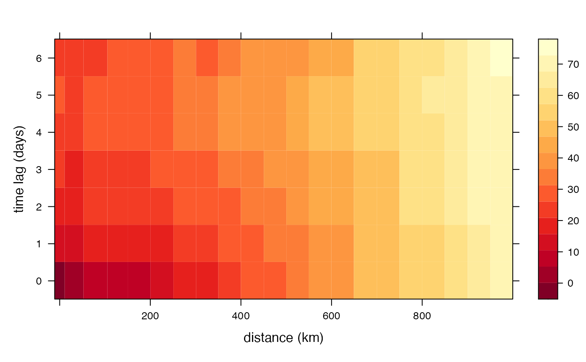
Now let’s see what happens if we account for a linear trend in latitude.
semiv<- semivariogram(locs,
temp_part,
Tmax2,
latitude_linear = TRUE,
longitude_linear = FALSE,
missing_value = -9999,
width = 50,
cutoff = 1000,
tlagmax = 7)
autoplot(semiv)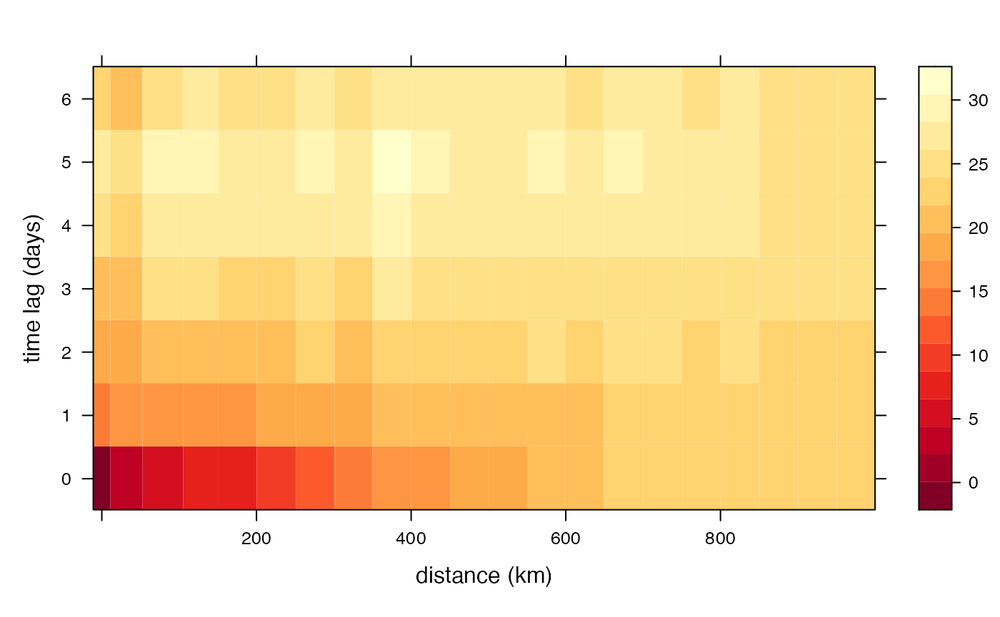
What about longitude?
semiv <- semivariogram(locs,
temp_part,
Tmax2,
latitude_linear = TRUE,
longitude_linear = TRUE,
missing_value = -9999,
width = 50,
cutoff = 1000,
tlagmax = 7)
autoplot(semiv)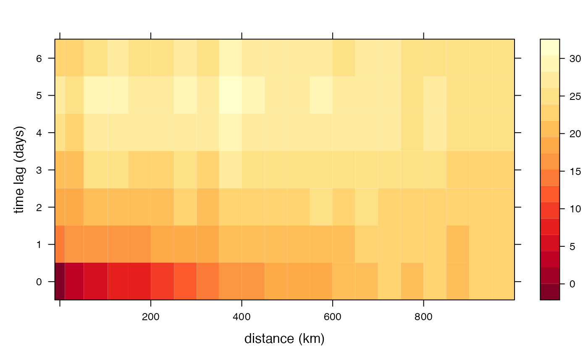
We see a big reduction in dark red squares when we include latitude, but not so much when we include both latitude and longitude. That means, there is a spatial component that we need to account for.